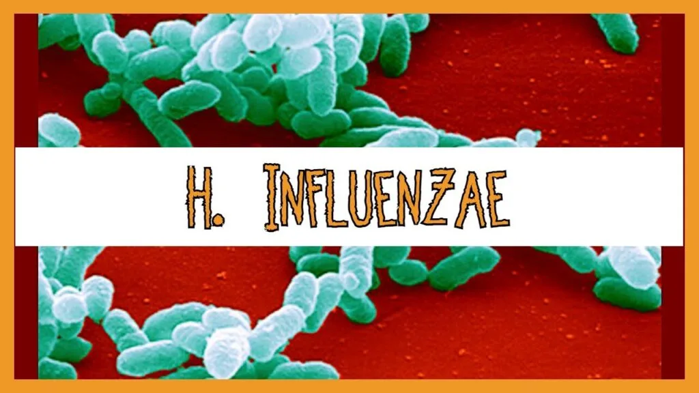
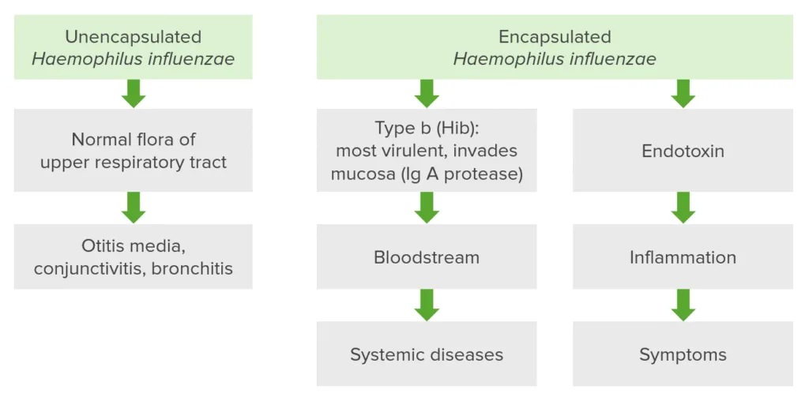
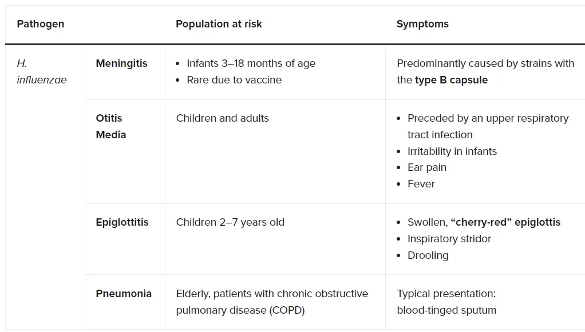
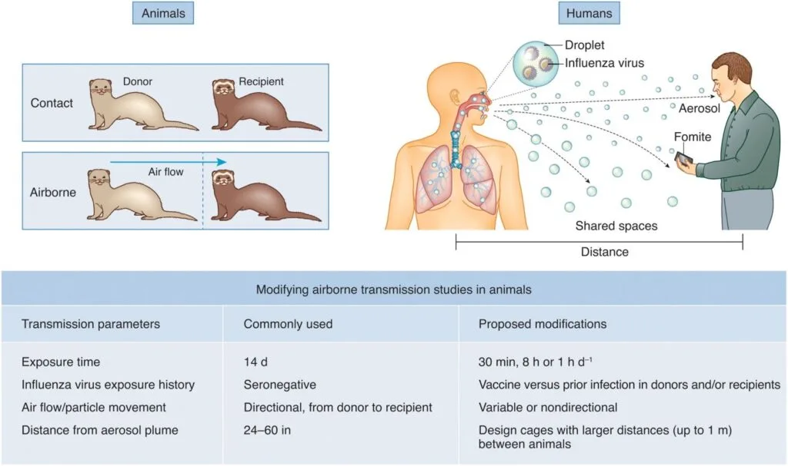
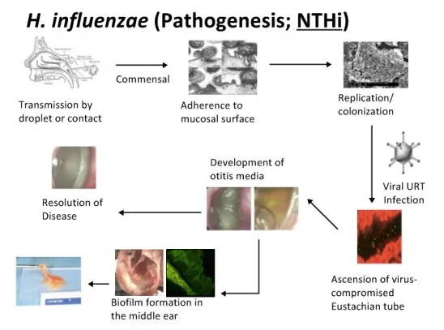
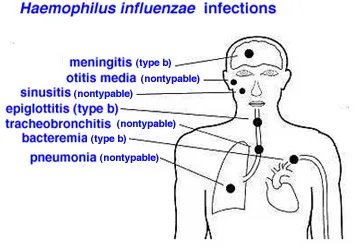
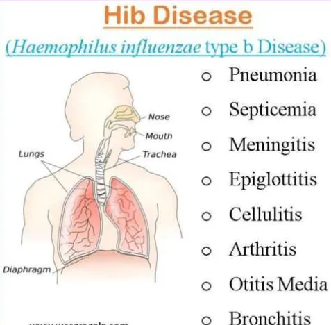
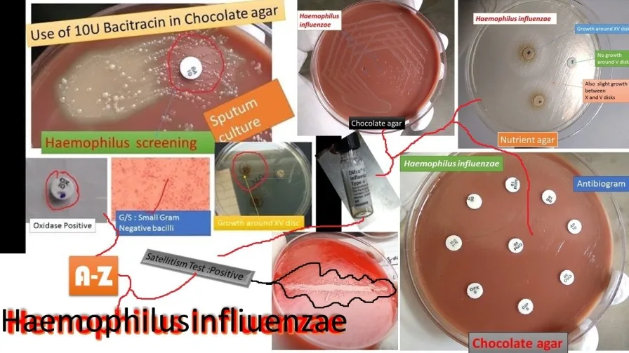

Expanded Nursing Uganda Explanation
Hemophilus influenza should be understood beyond a short definition. Link the concept to patient history, focused assessment, common risks, nursing priorities, documentation and evaluation of outcomes.
01 HAEMOPHILUS INFLUENZA INFECTION.
Haemophilus influenzae is a gram-negative , cocco-bacillary, facultatively anaerobic bacterium that falls within the Coccobacilli group. While it normally resides as a commensal in the nose and throat without causing infections under normal conditions, it can become pathogenic if host defenses are compromised.
The bacterium was initially misattributed as the cause of influenza, later identified correctly as the influenza virus.
02 Classifications of Haemophilus Influenzae
Haemophilus influenzae is classified into two main groups based on the presence or absence of a capsule : Encapsulated and Unencapsulated (non-typeable).
Encapsulated Types:
- There are six subtypes ( a to f ) distinguished by alphabetical letters corresponding to their capsular antigens (e.g., Haemophilus influenzae type a, b, c, d, e, and f).
- Among these, type b (Hib) is the most prevalent and notorious for causing severe diseases.
- The encapsulated types are susceptible to vaccination, notably the Hib vaccine.
Unencapsulated Types (Non-typeable):
- Lack capsular serotypes and are generally less invasive but can still cause inflammation.
- Not affected by the Hib vaccination.
03 Infections and Diseases:
Haemophilus influenzae infections can lead to various diseases, particularly when the bacterium successfully invades the body. These include:
Invasive Diseases: (For Encapsulated)
- Pneumonia
- Bacteremia
- Meningitis
- Epiglottitis
- Cellulitis
- Infectious arthritis
- Osteomyelitis , among others.
Non-invasive Diseases: ( For Non-encapsulated)
- Otitis media
- Conjunctivitis
04 Mode of spread of Haemophilus Influenzae:
The primary mode of spread for Haemophilus influenzae is person-to-person transmission through respiratory droplets. The bacterium is spread when an infected person coughs or sneezes, releasing tiny droplets containing the bacteria into the air. These droplets can then be inhaled by individuals in close contact, leading to the colonization of the respiratory tract.
- Respiratory Droplets : The most common mode of transmission is through respiratory droplets expelled by infected individuals during activities such as coughing, sneezing, or talking.
- Close Contact : Transmission is more likely to occur in situations where people are in close contact with an infected person, especially in crowded or confined spaces.
- Asymptomatic Carriers: Individuals colonized with Haemophilus influenzae , even if asymptomatic, can still potentially transmit the bacterium to others.
- Opportunistic Nature : Haemophilus influenzae is considered an opportunistic pathogen, meaning it takes advantage of weakened immune defenses to cause infections. While it can colonize the respiratory tract without causing disease in healthy individuals, it may lead to infections when the host’s immune system is compromised.
- Age Groups : The transmission is particularly significant in settings with a high density of young children, as they are more prone to certain types of invasive Haemophilus influenzae infections, such as Hib (Haemophilus influenzae type b) meningitis.
- Household Crowding : Living in a crowded household where people are in close proximity increases the likelihood of person-to-person transmission of the bacterium through respiratory droplets, which can lead to Hib infection.
- Large Household Size : Larger households provide more opportunities for the spread of infectious agents. The more people there are in a household, the higher the chances of someone being a carrier of Haemophilus influenzae, increasing the risk of transmission.
- Child Care Attendance : Children in daycare settings may have closer contact with each other, facilitating the spread of bacteria. Additionally, young children may not have fully developed immune systems, making them more susceptible to infections like Hib.
- Low Socioeconomic Status: Lower socioeconomic status often correlates with limited access to healthcare, crowded living conditions, and potential challenges in maintaining hygiene. These factors collectively contribute to an increased risk of Hib infection.
- Low Parental Education Levels : Parents with lower education levels may have less awareness of preventive measures and healthcare practices. This lack of knowledge can impact their ability to protect their children from infectious diseases, including Hib.
- School-Age Siblings : Siblings attending school may be exposed to various infectious agents, including Haemophilus influenzae. As carriers, they can potentially transmit the bacterium to younger siblings at home.
- Age (Youngest and Oldest) : The youngest and oldest individuals are at an elevated risk. Young children often have developing immune systems, and the elderly may have weakened immune defenses, making both age groups more susceptible to severe infections.
- Race/Ethnicity (Native Americans) : Native Americans may face elevated risks due to a combination of genetic, socioeconomic, and healthcare access factors that can contribute to a higher incidence of Hib disease.
- Chronic Diseases (e.g., HIV, Immunodeficiency): Conditions that compromise the immune system, such as HIV, immunodeficiency, or asplenia, reduce the body’s ability to fight infections, increasing the risk and severity of Hib disease.
- Prematurity : Premature infants may have underdeveloped immune systems, placing them at a higher risk of infections, including Hib. Their immune systems may not be fully equipped to respond effectively to bacterial threats.
- Extremes of Age (Below 5 and Above 65) : Both very young children (below 5 years) and the elderly (above 65 years) often have weaker immune responses, making them more vulnerable to severe infections, including those caused by Haemophilus influenzae.
- Immunocompromised Individuals : Individuals with compromised immune systems, such as those with HIV/AIDS, cancers, or sickle cell disease, are less capable of mounting an effective immune response against pathogens, increasing the risk of severe Hib infections.
- Asplenia : Asplenia (lack of a spleen or non-functional spleen) impairs the immune system’s ability to clear bacteria from the bloodstream, leading to an increased risk of severe Hib infections.
05 Pathophysiology of Haemophilus influenzae Infection:
- Entry into the Body: Haemophilus influenzae enters the body through the nasopharynx, commonly the upper respiratory tract.
- Colonization in the Nasopharynx: The organisms colonize the nasopharynx, where they may remain shortly or for several months. Some individuals may carry the bacteria without displaying symptoms, becoming asymptomatic carriers.
- Multiplication and Immune Recognition: Once inside the body, the organisms start to multiply. The immune system recognizes the presence of the foreign invader, sensitizing immune cells to the threat.
- Immune Response Activation: The immune system responds by transporting various defense cells, including cytokines, to the affected area. This mobilization is a defensive reaction against the invading bacteria.
- Inflammation Occurs: In response to the interaction between the immune cells and the bacteria, inflammation takes place. This is a protective mechanism designed to eliminate the infectious agent.
- Signs and Symptoms of Infection: The inflammatory response leads to signs and symptoms of infection, including fever, weakness, nausea, and other systemic manifestations. These symptoms are indicative of the body’s efforts to combat the infection.
06 Clinical Features according to Infections and Diseases
- Clinical Manifestation Signs and Symptoms
- Pneumonia Fever and chills Cough Shortness of breath Sweating Chest pain Headache Tiredness Fatigue
- Bacteraemia Fever and chills Tiredness Anorexia Nausea Vomiting Dyspnea Confusion Irritability
- Meningitis Fever Headache Neck stiffness Nausea ± vomiting Photophobia Confusion, decreased mental status. Hearing impairment or neurologic sequelae in survivors Case fatality ratio: 3% to 6%
- Epiglottitis Infection and swelling of the epiglottis Life-threatening airway obstruction
In Children:
- Signs and Symptoms
- Irritability Vomiting feeds Poor feeding and refusal of feeds Lack of interest in everything and inactivity General weakness Drowsiness Decreased reflexes in babies
07 Diagnosis and Investigations
Clinical Assessment:
- Medical History : Inquire about the patient’s symptoms, recent illnesses, and exposure to potential sources of infection.
- Physical Examination: A thorough examination to assess specific signs and symptoms associated with the type of infection, such as lung sounds for pneumonia or neck stiffness for meningitis.
Laboratory Tests:
- Gram Stain : To visualize the morphology of the bacteria. Gram stain of infected body fluids may reveal small, gram-negative coccobacilli, suggesting H. influenzae infection.
- Culture : Specimens for culture include CSF, blood, pleural fluid, joint fluid, and middle ear aspirates. Purpose is To isolate and identify H. influenzae. Positive culture for H. influenzae establishes the diagnosis. Detection of antigen or DNA can be used as an adjunct, especially in patients partially treated with antimicrobials.
- Cerebrospinal Fluid (CSF) Analysis : For suspected cases of meningitis, a lumbar puncture is performed to collect CSF. Analysis of the CSF can reveal the presence of bacteria, white blood cells, and other indicators of infection.
- Sputum Culture : In cases of pneumonia, a sputum sample may be collected and cultured to identify the causative organism, including Haemophilus influenzae.
- Polymerase Chain Reaction (PCR) : Molecular techniques like PCR can help identify the specific strain of Haemophilus influenzae, providing more detailed information for targeted treatment.
Imaging Studies:
- Chest X-ray : For suspected pneumonia, a chest X-ray may be conducted to visualize abnormalities in the lungs and confirm the diagnosis.
08 Management
Aims
- To minimize further complication.
- To relieve pain.
- To preserve life.
- To promote comfort
Immediate intervention
The patient and relatives are received, admitted to the medical ward. Incase patient has meningitis, they are admitted in an isolation room with dim light on a comfortable bed and positioned in a comfortable position.
Medical Management
- Antimicrobial Therapy:
- Choice of Antibiotics: Effective third-generation cephalosporins such as cefotaxime or ceftriaxone are the first-line treatment and should be initiated immediately. An alternative regimen includes chloramphenicol in combination with ampicillin.
- Duration of Treatment: A 10-day course of antimicrobial therapy is usually prescribed for severe infections. In cases of penicillin resistance, alternative antibiotics such as ceftriaxone, fluoroquinolones, or macrolides may be considered.
2. Supportive Treatment:
- Oxygen Therapy: Administered as needed, especially in cases of respiratory distress or pneumonia.
- Fluid Infusion: Maintaining hydration through intravenous fluid administration is crucial, especially in cases of severe infections where fluid loss may occur.
- Other Supportive Measures: Depending on the severity and the affected organ system, additional supportive measures may include analgesics for pain relief, antipyretics for fever management, and antiemetics for nausea and vomiting.
4. Monitoring : Regular monitoring of vital signs, blood pressure, and oxygen saturation to assess the patient’s response to treatment.
5. Vaccination : Administration of Haemophilus influenzae type b (Hib) vaccine as a preventive measure, especially in populations at risk, to reduce the incidence of invasive Hib disease.
Nursing care
1. Admission and Initial Assessment :
- Vital Signs: Regular monitoring of vital signs, including temperature, heart rate, respiratory rate, and blood pressure.
- Assessment: Conduct a thorough initial assessment to determine the severity of symptoms and the affected organ systems.
2. Infection Control Measures:
- Implement standard precautions to prevent the spread of infection.
- Isolation precautions may be necessary based on the specific type of infection.
3. Hydration and Nutrition:
- Administer intravenous fluids as prescribed to maintain hydration.
- Monitor and encourage oral fluid intake if tolerated.
- Collaborate with the dietitian to provide appropriate nutrition, considering any dietary restrictions or preferences.
4. Medication Administration :
- Administer prescribed antibiotics promptly and as directed.
- Monitor for any adverse reactions to medications.
5. Respiratory Support:
- Administer supplemental oxygen as prescribed for patients with respiratory distress or pneumonia.
- Monitor respiratory status closely and provide respiratory treatments as needed.
6. Pain Management:
- Assess and manage pain using appropriate pain management strategies.
- Administer analgesics as prescribed.
7. Fever Management:
- Implement measures to manage fever, such as administering antipyretics as prescribed.
- Employ physical cooling measures (cool compresses, fans) as needed.
8. Neurological Monitoring:
- For cases involving meningitis, monitor neurological status closely.
- Assess for signs of increased intracranial pressure.
9. Emotional Support:
- Provide emotional support to the patient and family, addressing any concerns or fears.
- Keep the family informed about the patient’s condition and treatment plan.
10. Patient Education:
- Educate the patient and family about the nature of the infection, treatment plan, and the importance of completing the prescribed antibiotic course.
- Provide information on preventive measures, such as vaccination.
11. Follow-Up Care:
- Plan for follow-up care and provide instructions for any necessary post-hospitalization care.
- Ensure the patient and family understand signs of complications and when to seek medical attention.
12. Collaboration with Other Healthcare Providers:
- Collaborate with physicians, pharmacists, and other healthcare providers to ensure a coordinated and effective treatment plan.
13. Documentation :
- Maintain thorough and accurate documentation of assessments, interventions, and patient responses.
Complications of Haemophilus influenzae Infection:
Meningitis Complications:
- Hearing Impairment : Occurs in 15% to 30% of survivors of meningitis.
- Neurological Sequelae : Such as cognitive deficits, motor abnormalities, or seizures.
Epiglottitis Complications:
- Airway Obstruction : Life-threatening complications may arise due to swelling of the epiglottis.
- Bacteremia Complications:
- Sepsis : Bacteremia can progress to sepsis, a severe systemic response to infection.
- Endocarditis : Infection of the heart valves may occur in rare cases.
- Pneumonia Complications:
- Respiratory Distress: Severe pneumonia can lead to respiratory failure and the need for mechanical ventilation.
- Arthritis Complications:
- Joint Damage : Infective arthritis can result in joint damage and functional impairment.
- Cellulitis Complications:
- Abscess Formation : Cellulitis may progress to the formation of abscesses in severe cases.
- Osteomyelitis Complications:
- Bone Damage: Invasive infections can lead to osteomyelitis, causing damage to bone tissue.
Prevention of Haemophilus influenzae Infection:
- Vaccination:
- Hib Vaccine: Vaccination against Haemophilus influenzae type b (Hib) is highly effective in preventing invasive diseases, including meningitis and bacteremia. It is a routine childhood vaccine.
- Pneumococcal Vaccine: Protects against pneumonia caused by various bacteria, including some strains of Haemophilus influenzae. Routine Immunizations:
- Ensuring timely administration of routine childhood immunizations as recommended by national vaccination schedules.
- Good Hygiene Practices:
- Hand Hygiene: Regular handwashing can help prevent the spread of respiratory infections, including Haemophilus influenzae.
- Avoiding Crowded Places:
- Especially during peak seasons of respiratory infections.
- Prompt Antibiotic Treatment:
- Early diagnosis and treatment of respiratory infections to prevent complications and the spread of the bacteria.
- Health Education:
- Raising awareness about the signs and symptoms of invasive infections and the importance of seeking medical attention promptly.
- Antibiotic Prophylaxis:
- In certain cases, antibiotic prophylaxis may be recommended for close contacts of individuals with Haemophilus influenzae infection to prevent secondary cases.
- Respiratory Etiquette:
- Encouraging the practice of covering the mouth and nose when coughing or sneezing to prevent the spread of respiratory droplets.
- Maintaining Healthy Lifestyle:
- Ensuring good nutrition, regular exercise, and overall well-being to support a healthy immune system.
09 Nursing Uganda Clinical Lens
Use Hemophilus influenza as a practical nursing topic, not only a memorized definition. Adapt assessment and care to age, weight, development, caregiver knowledge and family support.
- What to understand first: define hemophilus influenza, identify the normal or expected pattern, then explain what changes when the patient is unwell.
- Why it matters in care: the nurse must recognize risk early, explain findings clearly, document accurately and know when to escalate.
- How to revise it: connect each point to assessment, nursing diagnosis or care problem, intervention, rationale and evaluation.
10 Assessment Guide
- Airway, breathing, circulation, hydration, temperature, feeding, activity and danger signs.
- Weight-based medicines, immunization status, growth, development and caregiver concerns.
- Signs that may be subtle in children, including lethargy, poor feeding, fast breathing or convulsions.
11 Nursing Priorities, Rationales and Outcomes
- Use age-appropriate communication and involve the caregiver.
- Prevent dehydration, hypothermia, medication errors and delayed referral.
- Teach home care, danger signs and follow-up clearly.
The rationale for these priorities is patient safety: nursing actions should prevent deterioration, reduce discomfort, support recovery and create clear evidence for the next caregiver.
- Expected outcome: The child is clinically improving, caregiver instructions are understood and follow-up is arranged.
12 Patient Teaching and Revision Check
- Explain hemophilus influenza in simple language the patient or caregiver can repeat back.
- Teach warning signs, medicine or follow-up instructions, hygiene or lifestyle points where relevant.
- For exams, prepare a short answer using: definition, causes or risk factors, signs, assessment, management, complications and prevention.
- For ward practice, document baseline findings, actions taken, patient response and the plan for review.
Illustrations and Diagrams (21)








13 more diagrams available — open the lesson for full illustrations.
Related Video Lectures
Watch nursing lecture videos on YouTube for this topic. Opens in a new tab.
Watch on YouTubeExternal link: YouTube may use its own cookies and terms. Nursing Uganda is not affiliated with YouTube.